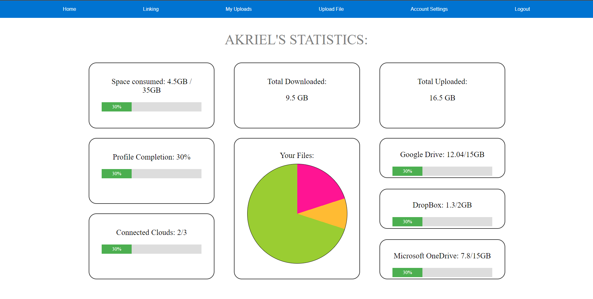

STOL is a proposed program that should let a user link their Cloud Storage accounts into a single piece, while also providing an easy to understand interface from where the user could upload / download / delete / update any requested file and the program would take care into spliting the files to the given and available cloud storages.
As the era brings more powerful components and gadgets, the digital files that we use daily also increase in size due to their increased qualility. Luckily enough, not only that the current tehnology gives us HDDs with more and more size, but we are also provided the use of cloud storage through diverse online application such as Google Drive, Microsoft OneDrive, and Dropbox.
Given the proposed aplication, we decide to take the chalange and unite the 3 cloud storages mentioned earlier, into a single online aplication.
Shortly after we took the task, we started the design for the desired web application. The very first thing we did, was to make create a simple arhitecture with simple ideas for the inernal functionality of each page and each functionality.
The initial idea of arhitecture design included:
Afterwards, we established that we also need a more tehnical arhitecture for the application to get started.
The simple principle was:
Having a plan explained, all we had to do now, was to start working on different tasks.
The roles were therefore assigned:
Balauca Stefan-Razvan:
Simion Ruben Andrei:
Stirbu Alexandru-Ilie:
Of course, regardless of the fact that we assigned diferent roles and tasks, we often helped each others and solved things together
We alocated a lot of time to learning and researching. One of the first things we've focused on was learning the basics of HTML, CSS, JavaScript and NodeJS.
Afterwards, we created the design for Prehome, Login and Register pages. Here are some images for reference
It was all pretty, but non functional. Having that in mind we also redesigned the arhitecture the for the upcoming things.
After having put more thoughts, we should have multiple settings, statistics in home, and a file manager for managing all the allowed actions inside the main aplication, instead of the simple initial "upload file" system.
The first aproach that we took, was to have a minimal design that we followed and created. For a better representation of what we are trying to say, we have the following example:
For home, we have firstly drawn the following design in Microsoft Paint:
Then that was the first adaptation in the actual web page
Afterwards we tried all kind of designs to be more appealing
Iteration 2:
Iteration 3:
Final Iteration, Ta daaaaaaaaaaaaa:
After we touched a pleasing design, we sticked with it and designed everything that came after, with the same design in mind.
The things that followed were the design for:
And we started the design for the File manager
Initial Design:
Final Design:
Okay, now that we've established the user interface, we need to make it functional and hosted on a server.
This server is the only thing that interacts with the webpages. It only received GET requests for each page and additional resources (such as styles, scripts, images).
The first step was starting to work with files and users. The main idea was to have a list of files with their owners.
Afterwads we introduced the notion of folder. And we defined a folder as a list of hyperlinks to other folder and/or files. We decided to think about the folders as something similar to the web system, in order to mentain the memory under control, and to have fast access from a folder to another
Then we defined an algorithm to generate the tree that containts the folders. Considering our arhitecture, a DFS is more than enough to receive and have control over all the files and folders.
Then we introducted the notion of Action. Any action is a log of a user's command. It isn't a notification, but rather a log that the user can see.
Then we started working on the Databases part. We decided to create 4 tables for the whole server:
To be easier to work and to reuse the code, we created a handler for the database that was persistent, and was initialized at the runtime of the server, before receiving any propper command. This handler is basically a collection of functions over the 4 tables and it represents the Model part of the application (in the MVC vision).
The server is a collection of methods specifics to the incoming requests and represents the Controller of the STOL application. It is processing data received from the Model.
GET commands that the server receives:
POST commads that the server receives:
PUT commads that the server receives:
DELETE commads that the server receives:
We thought the application in such a way that the server doesn't directly send the requests to the clouds, but to some API endpoints that were also written by us. All 3 clouds services that we managed to integrate in our application are incapsulated under the form of some API endpoints that all inherit the same abstract interface of commands defined by us.
There are 2 defined paths
In regards of the flow system: The client uploads in the web application a file, then that file is chunked down to Base64 pieces and the server receieves the chunks and decides to which cloud to send each of them.
In this process we have studied the Google Drive, DropBox and OneDrive documentations
All the chunks are downloaded and uploaded asyncron to increase the performance.
Now having all the pieces, the main point was merging the project together to be fully functional. In order to do this, we had to plan in advance. This diagram really helped:
We tried to define a series of inputs and outputs (communication protocols between the modules).
All the required datas are in json format (also stored in the NoSQL dataBase). Here is an example:
Some example of the data, we send and store in this format:
The technologies we have used so far are:
The used packages for NodeJS are: